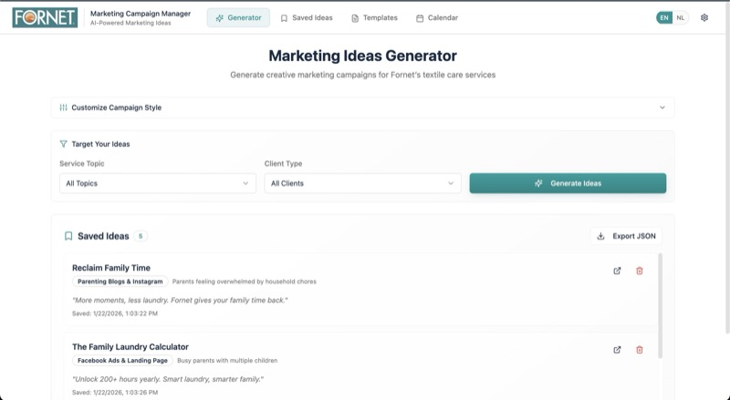
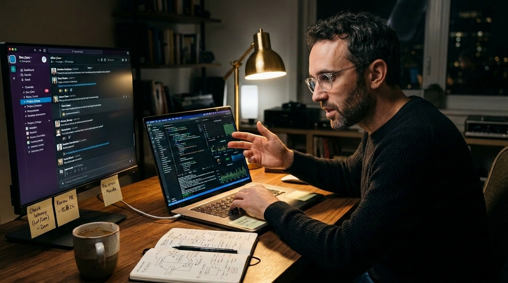
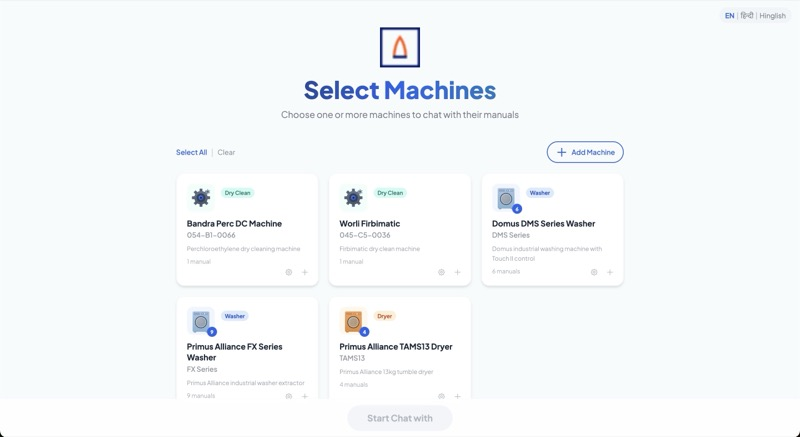
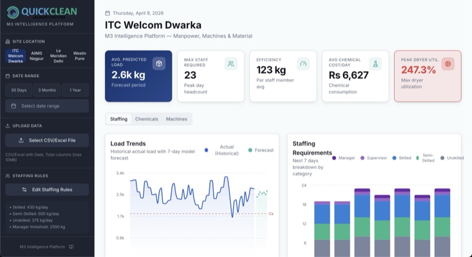
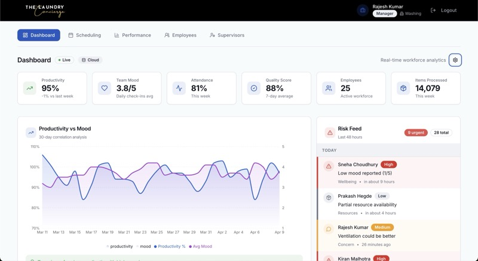
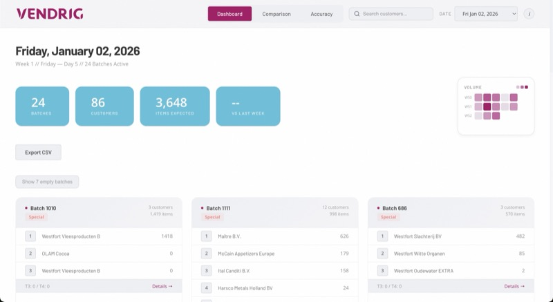
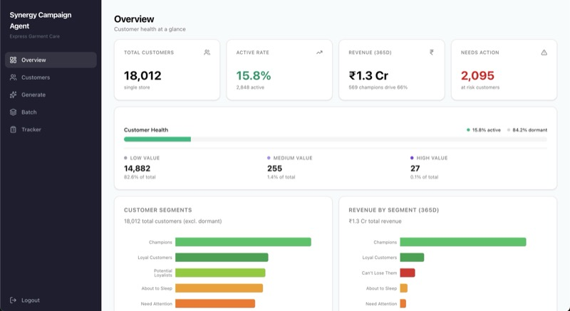
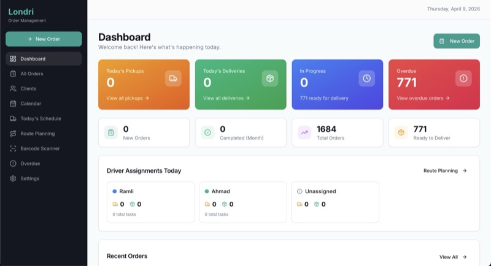

Fornet
CINET AI Program
AI is everywhere in the headlines. But what does it mean?
7 projects · Same approach
Building 7 tools myself - from data pipelines to user interfaces.








Most textile care businesses are at Level 1-2. That's not a failure — it's a starting point.

Press any key to close